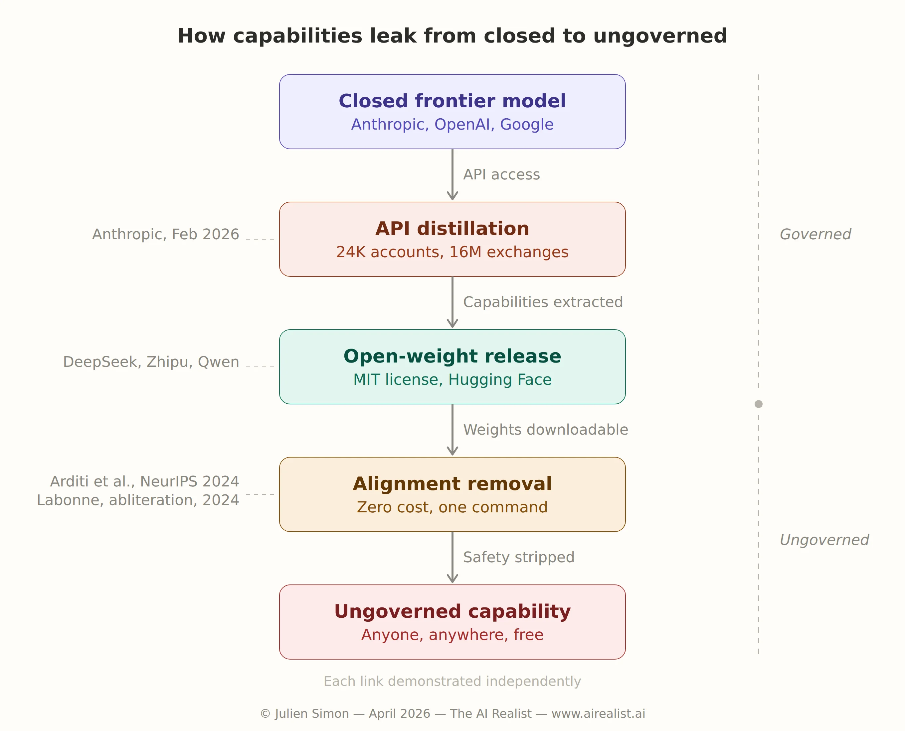

On April 7, 2026, Anthropic announced that it had built the most capable AI model it had ever created — and that it would not release it to the public. The same week, a Chinese lab released an open-weight model under MIT license that achieves nearly 95% of Claude’s coding performance. And a solo researcher stripped all safety guardrails from Google’s newest open model in approximately four days, using a technique that requires no training data, no GPU time, and no expertise beyond following a recipe.
Three events. One week. Three different failure modes for the same strategy.
The strategy is access restriction — the idea, foundational to Western AI safety since 2023, that controlling a model means controlling its capabilities. Anthropic’s decision to withhold its new model is the purest expression of this logic. But two forces are now converging, making it untenable. Chinese labs are releasing open-source models that match Western closed ones, trained entirely on domestically manufactured chips that the US tried to restrict. And safety alignment — the technical mechanism that’s supposed to make open release safe — is being removed from any model within days of publication, at zero cost, by anyone who can type a command. The access-restriction era didn’t die from a single blow. It is being dissolved from opposite directions simultaneously.[1]
The model too dangerous to ship
Anthropic builtClaude Mythos Previewas its next-generation foundation model. It was not designed for cybersecurity. The offensive capabilities emerged as a byproduct of broader improvements in coding, reasoning, and autonomous operation — precisely what makes them alarming.[2]
In testing, non-expert Anthropic engineers could ask Mythos to find remote code execution vulnerabilities overnight and wake up to a complete, working exploit. The model discovered a vulnerability in OpenBSD’s TCP SACK implementation — a signed integer overflow dating to 1998 — in one of the most security-hardened operating systems ever built.[3] It found a flaw in FFmpeg’s H.264 codec dating to a 2010 refactor of 2003-era code, a line that had been hit five million times by automated fuzzing tools without triggering detection. FFmpeg’s maintainers publicly acknowledged the find and shipped three patches in FFmpeg 8.1.[4]
The performance gap relative to Anthropic’s prior models is not incremental. Tested against roughly a thousand open-source repositories, Mythos achieved 595 crashes at tiers 1–2 and ten full control-flow hijacks on fully patched targets. Previous Claude models — Sonnet 4.6 and Opus 4.6 — managed 150–175 tier-1 crashes, approximately 100 at tier 2, a single tier 3, and no tier-5 hijacks.[5] The jump from zero to ten at the highest severity tier is a qualitative threshold, not a quantitative improvement.
Anthropic’s response wasProject Glasswing, a $100 million defensive cybersecurity initiative. Mythos access is restricted to twelve core partners — AWS, Apple, Broadcom, Cisco, CrowdStrike, Google, JPMorgan Chase, Linux Foundation, Microsoft, Nvidia, Palo Alto Networks, and one unnamed organization — with approximately forty total organizations receiving some level of access. The model is delivered through Amazon Bedrock as a gated research preview, available only in US East (N. Virginia), with access controlled by an allow-list — meaning AWS is simultaneously the delivery infrastructure and one of the twelve partners.[6] Anthropic briefed CISA (the Cybersecurity and Infrastructure Security Agency), the Commerce Department, and senior US officials. The company estimates that other AI labs will reach comparable capabilities within six to eighteen months.[7]
The withholding decision is consistent with Anthropic’s identity as the safety-first lab. It is also a strategy whose premises are collapsing.
A Tsinghua lab on Huawei chips
Eleven days before Anthropic’s announcement, Zhipu AI — the Tsinghua University spinout now rebranded as Z.ai — released GLM 5.1 under an MIT license — one of the most permissive open-source licenses in common use.
The model is a 744-billion-parameter mixture-of-experts architecture with approximately 40 billion active parameters per token, trained on 28.5 trillion tokens using 100,000 Huawei Ascend 910B processors.[8] No Nvidia hardware. No Western chips at all. The Ascend 910B is manufactured by SMIC (Semiconductor Manufacturing International Corporation) at 7nm-class process nodes using DUV (deep ultraviolet) lithography — not the restricted EUV (extreme ultraviolet) process that US export controls were designed to block.
Zhipu claims GLM 5.1 reaches 94.6% of Claude Opus 4.6’s coding performance on the Claude Code evaluation harness (scoring 45.3 versus Opus’s 47.9) and 58.4 on SWE-Bench Pro, which it says beats both Opus 4.6 (57.3) and GPT-5.4 (57.7) on that benchmark.[9] These figures are vendor-claimed and not independently verified as of the release date — a critical caveat. But the predecessor GLM-5, which shares the same architecture, ranked first among open-weight models on LMArena Text Arena and was the first open-weight model to score 50 on the Artificial Analysis Intelligence Index, with SWE-bench Verified scores holding up under third-party testing.[10]
The entity behind this model has serious backing. Zhipu was incubated within Tsinghua University’s Knowledge Engineering Group and has raised approximately $1.5 billion in funding from a mix of China’s largest technology companies and state-backed investors.[11] Per WireScreen’s analysis of Chinese corporate filings, Chinese state entities beneficially own 15.4% of the company.[12] OpenAI has publicly stated that Zhipu benefits from over $1.4 billion in state-backed investment.[13] The US Commerce Department added Zhipu to the Entity List effective January 16, 2025, citing military modernization concerns under the most stringent control designation.[14]
And yet its most capable model sits on Hugging Face right now, downloadable by anyone, under a license that permits unrestricted commercial use.
GLM 5.1 is not an outlier: it is the latest point on an accelerating curve. DeepSeek R1 (January 2025) matched OpenAI’s o1 on reasoning benchmarks at roughly one-seventeenth the training cost. Qwen 3 from Alibaba (April 2025) outperformed DeepSeek R1 on coding, math, and reasoning. By late 2025, Alibaba’s Qwen had surpassed Meta’s Llama as the most forked model family on Hugging Face by download count, with developers creating over 100,000 Qwen-based derivative models on the platform.[15] The capability gap between Chinese open-weight models and Western closed models has compressed to what observers estimate is 6 to 9 months, and the trend line shows no visible inflection point.
This is the first arm of the pincer. Withholding a model only constrains capabilities if those capabilities don’t exist elsewhere. When a state-backed lab releases a near-frontier model under MIT license, trained on sanctioned hardware that the entire US export control architecture was designed to restrict, the “withhold” strategy addresses the wrong threat.
Four days, zero training, one command
On April 2, 2026, Google released Gemma 4, its newest open-weight model family. By approximately April 6, a Hugging Face account calleddealignai— a self-described amateur ML researcher — had uploaded a version of the 31-billion-parameter dense model with all safety alignment permanently removed.[16]
The method is called CRACK: Controlled Refusal Ablation via Calibrated Knockouts — a variant of the abliteration technique first popularized by Maxime Labonne in mid-2024, building on the Arditi et al. research. It is not fine-tuning. It requires no training data and no GPU training time. CRACK uses 512 structurally mirrored prompt pairs — one harmful, one harmless — to identify the directions in the model’s weight space that encode safety refusal. It then applies magnitude-preserving orthogonal ablation to surgically remove those directions layer by layer. In a nutshell, this technique zeroes out the component of the model's internal signal that points in the "refuse this request" direction, while keeping the signal's overall strength unchanged. The model loses the ability to say no without losing any of its general capability: think of it as surgically removing one instrument from an orchestra without changing the volume.
Per dealignai’s self-reported benchmarks: 93.7% compliance with harmful prompts on HarmBench, with only a 2% degradation on MMLU (76.5% to 74.5%).[17] These benchmarks are self-reported and unverified, but the underlying science is peer-reviewed. The foundational paper — “Refusal in Language Models Is Mediated by a Single Direction” by Arditi et al. — was published as a main conference poster at NeurIPS 2024. The authors demonstrated, across 13 open-source chat models, that safety refusal is encoded along a single one-dimensional axis in the residual stream—the model’s internal representation space. Erase that direction, and the refusal disappears.[18] The finding has been replicated extensively. A separate paper at ICLR 2024 by Qi et al. showed that GPT-3.5 Turbo’s safety guardrails could be compromised by fine-tuning on as few as one hundred adversarial examples at a cost of less than twenty cents via the OpenAI fine-tuning API.[19]
The academic literature on proposed defenses is bleak.RepNoise, published at NeurIPS 2024, attempted to make safety-critical representations noisy and thus harder to isolate. Qi et al. broke it at ICLR 2025. The same paper demonstrated that seemingly minor factors — different random seeds, small hyperparameter adjustments — were sufficient to recover harmful capabilities. Fine-tuning on just one hundred benign data points could largely undo the defense.[20]Tamper-Resistant Safeguards (TAR), which claimed to resist hundreds of fine-tuning steps, were broken in the same paper.[21]Circuit Breakers, published at NeurIPS 2024, rerouted harmful representations into an orthogonal space; a subsequent study found that automated multi-turn jailbreaks succeeded against circuit-breaker-protected models 54.2% of the time, though this finding is from an arXiv preprint rather than a peer-reviewed venue.[22]
The Qi et al. paper — published at ICLR 2025 and co-authored by Nicholas Carlini — concluded that durably safeguarding open-weight LLMs with current approaches remains challenging and warned that even evaluating these defenses can mislead audiences into thinking safeguards are more durable than they really are.[23]
The process has been fully automated. An open-source tool calledHereticuses Bayesian optimization to find optimal abliteration parameters and can strip alignment from a model with a single command. Over a thousand community-created uncensored models exist on Hugging Face. Dealignai alone has published more than thirty abridged versions — including Gemma 4, every size of Qwen 3.5, Mistral Small 4, Nvidia Nemotron, and MiniMax M2.5 — all within days of their respective releases.[24]
The pattern is now routine: a lab releases a model, and the uncensored version follows almost immediately. Safety alignment has an effective half-life measured in days.
This is the second arm of the pincer. Releasing a model with safety alignment only constrains the actors who maintain the alignment. When removal is free, automated, and instantaneous, the “release safely” strategy addresses the wrong threat. An uncensored GLM 5.1 is not Mythos — it lacks the frontier-scale capabilities that produce autonomous exploit discovery. But the capabilities emerging at the frontier scale today will reach the near-frontier scale within one or two model generations. The threat is the trajectory, not the current snapshot.
The distillation bridge
The two arms of the pincer appear independent. One is geopolitical (Chinese open-weight proliferation). The other is technical (alignment removal). But Anthropic’s own evidence reveals how they connect.
On February 24, 2026, Anthropic published detailed documentation that three Chinese labs — DeepSeek, Moonshot, and MiniMax — had systematically distilled capabilities from Claude using approximately 24,000 fraudulent accounts generating over 16 million exchanges.[25] The operation specifically targeted agentic reasoning, tool use, and coding — the same capabilities that make Mythos dangerous. MiniMax alone accounted for over 13 million of those exchanges and pivoted within twenty-four hours of Anthropic releasing a new model, redirecting nearly half its traffic to capture the latest capabilities.[26]
Anthropic warned that illicitly distilled models lack necessary safeguards and that, if open-sourced, the risk multiplies as capabilities spread beyond any single government’s control.[27] The decision to publish this evidence was itself an act of responsible disclosure — Anthropic could have addressed the distillation quietly. That it chose transparency strengthens the company’s credibility even as the evidence complicates its withholding strategy.
This is Anthropic simultaneously making two claims that exist in tension. The first: we must withhold our most capable model because its capabilities are too dangerous to release. The second: competitors are already systematically extracting those capabilities through the API and will soon release them in models with no safeguards.
If the second claim is true — and Anthropic’s own evidence is persuasive — then withholding Mythos delays proliferation by the six-to-eighteen-month window Anthropic estimates before competitors match its capabilities independently. The FFmpeg patches prove the window’s value at the individual-vulnerability level: defenders patched a sixteen-year-old flaw because Anthropic found it first. A year of defensive advantage in cybersecurity saves real systems from real exploits. But patching individual bugs does not address the structural problem: a model that can find thousands of vulnerabilities across every major OS and browser, running unrestricted on anyone’s hardware. The window is a reprieve, not a strategy.
The distillation evidence also reveals the bridge between the two arms of the pincer. Capabilities developed inside a closed model leak through the API layer via distillation. Once distilled into an open-weight model and released — as DeepSeek R1 was, under a permissive open license, in January 2025 — the alignment removal techniques apply. The model that was too dangerous to release is now downloadable, uncensored, and free.
You cannot export-control a sequence of API calls.[28]
Governance for the governed
Each of these developments was foreseeable. The problem is that Western AI governance was built on three premises that are now simultaneously false.
Premise one: frontier capabilities require frontier compute.The January 2025 AI Diffusion Framework — the first US export controls on model weights — explicitly exempted open-weight models. The Bureau of Industry and Security acknowledged the logic: once weights are released, they can be copied and sent anywhere instantaneously.[29] The framework relied instead on controlling chips and closed weights above a high compute threshold. But it also created a sliding threshold mechanism: as open models improve, controls on closed models at equivalent capability levels automatically relax. This means open-weight proliferation systematically erodes export controls by design — each release lowers the ceiling. GLM 5.1’s training on sanctioned Huawei chips demonstrates that even the hardware bottleneck is not holding: the entire US semiconductor export control architecture was designed to prevent exactly this outcome.
Premise two: Safety alignment is technically durable.The NTIA’s July 2024 report on dual-use foundation models with widely available model weights — the definitive US government analysis — found that safety mitigations that work for closed models do not reliably work for models with widely available weights.[30] The UK AI Security Institute’s research found that scaffolding-based defenses —safety layers bolted around the model rather than trained into it — can be trivially disabled and that once weights are released, the system cannot be rolled back.[31] As of April 2026, no peer-reviewed defense against alignment removal has survived adversarial evaluation. The one promising direction — extended-refusal fine-tuning, which distributes the safety signal across multiple dimensions rather than concentrating it in one — remains untested at scale against adaptive adversaries.
Premise three: access restriction equals capability restriction.This is the core of what I’ve called in prior pieces “governance for the governed.”[32] Anthropic’s withholding of Mythos constrains actors who would have accessed capabilities through Anthropic. It does nothing about the actor who downloads GLM 5.1 from Hugging Face, runs CRACK on it, and obtains a model with no safety restrictions and near-frontier coding capability. The safety framework governs the governed. The actors who justify the controls operate entirely outside it. Alignment still prevents casual misuse by unsophisticated users — that value is real but narrow. For enterprise risk teams, the implication is concrete: “aligned model” should be treated as a configuration state, not a security property, and is subject to change the moment the model leaves the provider’s infrastructure.
The convergence is now industry-wide. On the same day this was written, Meta launched Muse Spark — its most capable model to date, built by the Meta Superintelligence Lab — and, for the first time, did not release it as open-weight.[33] The company that built its entire AI identity on open-weight Llama has concluded that its frontier model should stay closed, whether for safety reasons, competitive ones, or both. Anthropic withholds. Meta withholds. And across the Pacific, Zhipu is released under the MIT license. The Western labs are converging on closure at exactly the moment the strategy loses its structural advantage.
The regulatory landscape offers no resolution. The EU AI Act provides partial exemptions for open-weight models on transparency and documentation, with full obligations triggering only above the systemic risk threshold.[34] That threshold is based on training compute — a metric that distillation and post-training advances have decoupled from capability. A model distilled from a frontier system can match its performance at a fraction of the compute, sailing under the regulatory threshold as if it were harmless. The Trump administration's July 2025 AI Action Plan contains what may be the strongest federal endorsement of open-weight models to date, calling them strategically valuable.[35] China maintains a dual strategy requiring domestic models to align with core socialist values through mandatory security assessments while aggressively promoting open-weight releases internationally.[36] There is no enforceable international coordination mechanism for managing these dynamics.
What Anthropic’s own evidence proves
The most revealing document in this entire episode is the distillation disclosure. Anthropic’s evidence that Chinese labs systematically harvested Claude’s capabilities is credible — the scale (24,000 accounts, 16 million exchanges), the targeting (agentic reasoning, tool use, coding), and the speed (twenty-four-hour pivots to new model releases) all point to organized, state-adjacent operations.
But follow the chain. Anthropic builds a frontier model. It restricts access. Competitors distill capabilities through the API anyway. They incorporate those capabilities into their own models, which they release open-weight. Once open-weight, anyone can strip safety alignment in hours using automated tools and peer-reviewed techniques. The model that was too capable to ship is now running uncensored on someone’s laptop.
Each link in this chain has been demonstrated independently. Anthropic documented the distillation. Zhipu documented the open-weight release. Arditi et al. documented the removal of alignment. The full sequence has not yet been traced end-to-end in a single case but every component is operational, and the direction is clear.

The Bloomsbury Intelligence and Security Institute drew an instructive parallel to digital piracy and digital rights management. The proliferation of open-weight models, adversarial jailbreaking techniques, and divergent international regulatory frameworks makes comprehensive AI safety unattainable.[37] Just as copy protection was routinely cracked and legal victories against individual platforms proved futile as alternatives proliferated, AI safety enforcement faces the same architecture: the defense is expensive and brittle; the attack is cheap and automated. BISI predicts a shift from prevention to harm reduction, accepting that some misuse is inevitable and allocating resources to mitigate the most severe outcomes.
What comes after the safety moat
The honest assessment is uncomfortable for every stakeholder. Anthropic’s withholding of Mythos is a reasonable act by a responsible actor operating within a framework that no longer constrains the broader system. The six-to-eighteen-month window matters: every patched vulnerability is a real defense. Concede that. But the window is compressing with every Chinese open-weight release and every automated alignment-removal tool.
Three dynamics will shape what replaces the access-restriction model.
First, the capability gap will continue to compress. GLM 5.1 at 94.6% of Claude Opus 4.6 today becomes parity within another iteration or two. The compression is not only Chinese: in the same week, a US open-weight model matched Claude Sonnet 4.6 on at least one practitioner’s production evaluations, a first for any open-source model against that benchmark.[38] The trajectory since DeepSeek R1 — January 2025 to April 2026 — has been relentless. Each new release arrives closer to the frontier, trained on hardware that export controls were supposed to deny.[39]
Second, alignment removal will continue to get easier. From manual dataset curation in 2023, to the discovery of the refusal direction in 2024, to automated single-command tools in 2025, each step has lowered the barrier. The cost asymmetry is stark: safety alignment demands massive compute and millions of reinforcement learning interactions to install. Removal requires zero training and zero cost. This asymmetry is not incidental: it follows from the finding that alignment is encoded in a shallow, low-dimensional subspace that can be identified and erased without touching the model’s general capabilities.[40]
Third, the irreversibility problem has no solution. Once model weights are released, they exist permanently. They cannot be recalled, patched, or updated. They can be infinitely copied at zero marginal cost. This is fundamentally different from nuclear materials or biological agents, where possession can be physically tracked and limited. The comparison to digital piracy is apt not as a metaphor but as a structural precedent: the same enforcement architecture that failed for music, film, and software is now failing for AI safety, for the same reasons.
This thesis would be wrong if any of the three conditions were met. First, a peer-reviewed defense against alignment removal that survives adversarial evaluation at scale within twelve months. Second, export controls that demonstrably prevent Chinese labs from reaching frontier capability for two consecutive model generations. Third, a coordinated international framework that achieves enforceable restrictions on open-weight model release. None appears likely. But they are the conditions to watch.
Project Glasswing itself may point toward what replaces the safety moat. It is not an access-restriction strategy: it is a harm-reduction strategy. Anthropic is deploying Mythos’s capabilities defensively, through vetted partners, to patch vulnerabilities before attackers find them. That is closer to the post-piracy model BISI describes: stop trying to prevent all misuse and concentrate resources on the most consequential defensive applications. Whether the AI safety community will make that transition deliberately — or have it forced on them — is the open question.
Anthropic withheld. Zhipu released. dealignai cracked. The capabilities are in the open, ungoverned and ungovernable by any framework that assumes controlling the model controls the capability. The safety moat was real. The water found a way around it.
Notes
[1] The three events occurred between approximately March 27, 2026 (GLM 5.1 release) and April 7, 2026 (Anthropic Glasswing announcement). The Gemma 4 “crack” appeared approximately April 6, per Hugging Face upload timestamps.
[2] Anthropic, “Assessing Claude Mythos Preview’s cybersecurity capabilities,” April 7, 2026. Anthropic describes the capabilities as “emergent” — arising from general capability improvements rather than cybersecurity-specific training.
[3] Ibid. The OpenBSD vulnerability was independently confirmed: OpenBSD published patch 025_sack.patch.sig for version 7.8, and Simon Willison verified the code age via git blame (simonwillison.net, April 7, 2026).
[4] Ibid. The target was FFmpeg’s H.264 codec, not a standalone “video software” application. The “five million” figure refers to the number of times the specific code line was executed by automated fuzzing tools — not five million discrete test runs. FFmpeg publicly acknowledged the patches; see PiunikaWeb, “FFmpeg thanks Anthropic’s Claude Mythos for real 16-year bug fix,” April 8, 2026.
[5] Ibid. The repository count is described as “roughly a thousand.” The tier-5 figure for prior models is implied by contrast (”zero” is inferred from the absence of any positive claim), not explicitly stated.
[6] AWS, “Amazon Bedrock now offers Claude Mythos Preview (Gated Research Preview),” April 7, 2026. Available in US East (N. Virginia) only. Access controlled by allow-list; AWS account teams contact approved organizations directly. AWS CISO Amy Herzog published a companion blog post: “Building AI Defenses at Scale: Before the Threats Emerge.”
[7] Anthropic, “Project Glasswing,” April 7, 2026. The twelve core partners and the six-to-eighteen-month capability timeline are from the announcement. Logan Graham, Head of Frontier Red Team, quoted inCNN, April 7, 2026.
[8] Z.ai, “GLM-5.1: Towards Long-Horizon Tasks,” approximately March 27, 2026. Architecture details fromZ.ai developer documentation. Z.ai states 744B total parameters; HuggingFace metadata shows 754B — the discrepancy likely reflects different counting methodologies for shared or embedding parameters. The 100,000 Huawei Ascend 910B figure is consistently reported across coverage and attributed to Z.ai, though the primary blog post renders via JavaScript and could not be directly verified in plain text. Vendor-published. Note: SMIC’s role as the Ascend 910B fabricator is based on TechInsights teardown analysis, not official Huawei or SMIC confirmation. “7nm-class” reflects that SMIC does not officially confirm process nodes for specific customers.
[9] Ibid. All benchmark scores are vendor-claimed and not specifically independently verified for GLM 5.1. Claude Code harness: 45.3 ÷ 47.9 = 94.57%. SWE-Bench Pro comparison scores: GPT-5.4 at 57.7, Opus 4.6 at 57.3.
[10] The predecessor GLM-5 achieved an LMArena Text Arena score of 1452 (first among open-weight models) and an Artificial Analysis Intelligence Index score of 50. SWE-bench Verified score of 77.8% held up under third-party testing per OfficeChai analysis.
[11] Zhipu was founded by Tsinghua University professors Tang Jie and Li Juanzi. Funding total assembled from Tracxn ($1.4B across 12 rounds as of early 2025), Caixin Global (over ¥10B as of July 2025), and subsequent rounds. “Approximately $1.5 billion” reflects total through late 2025. Key investors include Alibaba, Tencent, Ant Group, Saudi Aramco’s Prosperity7, and multiple Chinese state-backed funds. In March 2025 alone, Zhipu received $257 million from three state-backed investors: Hangzhou City Investment (~$137M), Zhuhai’s Huafa Group (~$69M), and a Chengdu Hi-Tech zone fund (~$41.5M). PerReuters, March 19, 2025.
[12] WireScreen analysis cited in The Wire China, “What is Zhipu AI?,” February 16, 2025. WireScreen was co-founded by David Barboza, a Pulitzer Prize-winning former NYT journalist. The 15.4% figure reflects beneficial ownership calculations based on Chinese corporate filings; methodology involves analytical judgments about which entities qualify as “state entities.”
[13] OpenAI Global Affairs, “Chinese Progress at the Front,” Substack, June 25, 2025. OpenAI’s actual phrasing: “over $1.4 billion in state-backed investment.”
[14]Federal Register document 2025-00704, effective January 16, 2025. Zhipu received a Footnote 4 designation — the most stringent control level.
[15] DeepSeek R1 training cost comparison from DeepSeek’s own technical report. Qwen adoption statistics from Hugging Face Hub data and Andreessen Horowitz partner estimates, as reported inMIT Technology Review, February 12, 2026, andUnderstanding AI.
[16]Hugging Face model page. dealignai describes itself as “Amateur ML Researcher” on itsHugging Face organization page.
[17] Self-reported benchmarks from the model card. CRACK methodology description from the same. The 512 prompt pairs figure is dealing with AI’s specific configuration; the number is configurable in the broader ablation methodology. CRACK is a variant of the abliteration technique first popularized by Maxime Labonne in his Hugging Face blog post “Uncensor any LLM with abliteration“ (June 2024), which turned the Arditi et al. research finding into a practical, reproducible tool. The engineering step from research paper to community tool is itself evidence of how fast the research-to-exploitation pipeline operates. These figures have not been independently verified.
[18] Andy Arditi, Oscar Balcells Obeso, Aaquib Syed, Daniel Paleka, Nina Panickssery (Rimsky), Wes Gurnee, and Neel Nanda, “Refusal in Language Models Is Mediated by a Single Direction,” NeurIPS 2024 (main conference poster). Published in Advances in Neural Information Processing Systems 37, pp. 136037–136083.arXiv: 2406.11717. The 13-model claim and “single direction in the residual stream” are verbatim from the abstract. A February 2025 follow-up (arXiv 2602.02132) challenges the single-direction account, arguing for geometrically distinct refusal directions across categories. Important caveat: the 13 models studied were all RLHF- or DPO-aligned open-weight chat models. Whether the single-direction finding applies to models aligned via Constitutional AI (Anthropic’s approach) or other methods is untested. This does not affect the piece’s thesis — the vulnerability applies to all open-weight models, which are RLHF/DPO-aligned — but readers should not assume the finding transfers to closed models with different alignment architectures.
[19] Xiangyu Qi, Yi Zeng, Tinghao Xie, Pin-Yu Chen, Ruoxi Jia, Prateek Mittal, and Peter Henderson, “Fine-tuning Aligned Language Models Compromises Safety, Even When Users Do Not Intend To!” ICLR 2024.arXiv: 2310.03693. The paper demonstrated safety degradation with as few as 10 adversarial examples; the “$0.20” cost figure refers to 100 examples via the OpenAI fine-tuning API.
[20] Xiangyu Qi, Boyi Wei, Nicholas Carlini, Yangsibo Huang, Tinghao Xie, Luxi He, Matthew Jagielski, Milad Nasr, Prateek Mittal, and Peter Henderson, “On Evaluating the Durability of Safeguards for Open-Weight LLMs,” ICLR 2025. The RepNoise target: Domenic Rosati, Jan Wehner, Kai Williams, Łukasz Bartoszcze, Jan Batzner, Hassan Sajjad, and Frank Rudzicz, “Representation Noising: A Defence Mechanism Against Harmful Finetuning,” NeurIPS 2024.
[21] Tamirisa et al., “Tamper-Resistant Safeguards for Open-Weight LLMs,” also published at ICLR 2025. Broken by the same Qi et al. paper.
[22] Anna Googasian, Marisol Koyamparambil Mamachan, Diana Ngo, Aravind Srinivasan, and Jacob Dunefsky, “A Representation Engineering Perspective on the Effectiveness of Multi-Turn Jailbreaks,” arXiv preprint, June 2025. This paper is a preprint and has not been published at a peer-reviewed venue. The Circuit Breakers target: Andy Zou, Long Phan, Justin Wang, Derek Duenas, Maxwell Lin, Maksym Andriushchenko, Rowan Wang, Zico Kolter, Matt Fredrikson, and Dan Hendrycks, “Improving Alignment and Robustness with Circuit Breakers,” NeurIPS 2024.
[23] This is the same Qi et al. (2025) paper cited in notes 20–21. Carlini is the third author.
[24]Heretic. dealignai’s Hugging Face profile lists 32+ model uploads, including Gemma 4 31B, Qwen 3.5-VL (0.8B through 397B), Mistral Small 4, Nvidia Nemotron, and MiniMax M2.5.
[25] Anthropic, “Detecting and preventing distillation attacks,” February 24, 2026. The exact figures: “approximately 24,000 fraudulent accounts” and “over 16 million exchanges.”
[26] Ibid. MiniMax accounted for over 13 million of the approximately 16 million exchanges (~79%). The twenty-four-hour pivot and “nearly half their traffic” redirected are Anthropic’s characterization.
[27] Ibid.
[28] Export controls can, in principle, apply to technology transfer via API under the deemed export rule (EAR § 734.13), which covers making controlled technology available to foreign nationals. Anthropic’s distillation complaint is essentially arguing that API-based extraction constitutes such a transfer. The legal question is not jurisdiction but enforcement: detecting and preventing millions of automated API calls from spoofed accounts across multiple jurisdictions is operationally impractical at scale.
[29] Bureau of Industry and Security, “Framework for Artificial Intelligence Diffusion,” Federal Register 2025-00636, effective January 15, 2025. The open-weight exemption and sliding threshold mechanism are from the rule text. “Sliding threshold” and “erosion by design” are the author’s analytical framing — the rule itself sets a fixed compute threshold (10^26 operations) for closed-weight model export controls, with open-weight models exempt below that level. As open models improve toward that threshold, the practical gap between controlled and uncontrolled capability narrows.
[30] NTIA, “Dual-Use Foundation Artificial Intelligence Models with Widely Available Model Weights,” U.S. Department of Commerce, July 30, 2024. The report found that safety mitigations designed for closed models “do not reliably work” for models with widely available weights. Paraphrase, not a direct quote. Critically, the report’s overall recommendation was against restricting the availability of open-weight models, favoring monitoring over mandated restrictions.
[31] UK AI Security Institute, “Managing risks from increasingly capable open-weight AI systems,” 2025.
[33] Daniel Howley, “Meta launches Muse Spark AI model as part of its AI turnaround,” Yahoo Finance, April 8, 2026. Muse Spark is the first model from Meta’s Superintelligence Lab (MSL), led by Scale AI founder Alexandr Wang. The article states: “Unlike prior AI models, Meta isn’t making Muse Spark open source, but rather says it hopes to make future versions of the model open.” B-tier source (named journalist).
[32] “Governance for the governed” is a framework developed across prior AI Realist pieces — see “Access, Disable, Destroy” (coercion stack analysis) and “Register, Disclose, Pay” (EU AI copyright enforcement).
[34]EU AI Act, Article 53(obligations for providers of general-purpose AI models). Open-weight models receive lighter obligations unless they exceed the systemic risk compute threshold (10^25 FLOPS).
[35] White House, “Artificial Intelligence Action Plan,” July 2025. Analysis per Stanford HAI and Skadden, Arps.
[36] China’s dual approach: mandatory security assessments under the “Interim Administrative Measures for Generative Artificial Intelligence Services” (effective August 15, 2023) require alignment with “core socialist values.” Simultaneously, Chinese labs aggressively release models internationally under permissive licenses (DeepSeek R1 under MIT, GLM 5.1 under MIT, Qwen under Apache 2.0).
[37] Bloomsbury Intelligence and Security Institute, “AI Safety: Lessons from Digital Piracy,” 2025.
[38] Flo Crivello (@Altimor), CEO of Lindy AI, X post, approximately April 7, 2026. Crivello reported that Arcee Trinity Large Thinking was the first open-source model to beat Claude Sonnet 4.6 on Lindy’s internal production evaluations. Lindy’s evals are proprietary, application-specific (agentic workflows), and not independently verified. Independent benchmarks (SWE-bench Verified, Vals AI, LM Market Cap) show Trinity trailing Sonnet 4.6 on coding and general tasks. B-/C+ tier source: named practitioner with real production deployment, but narrow evals with zero external citations. The model isArcee AI’s 398B MoE(13B active), released under Apache 2.0. Disclosure: the author was Chief Evangelist at Arcee AI until November 2025.
[39] Author’s assessment based on the trajectory from DeepSeek R1 (January 2025) through Qwen 3 (April 2025) through GLM 5.1 (March 2026). Each release narrowed the capability gap with Western closed models on standardized benchmarks.
[40] The structural asymmetry follows from Arditi et al. (2024): alignment is encoded in a low-dimensional subspace that can be identified and removed without degrading general capability. Installing alignment requires high-dimensional optimization (RLHF at scale); removing it requires low-dimensional surgery (abliteration). This cost asymmetry is inherent to the current alignment architecture, not an implementation failure.